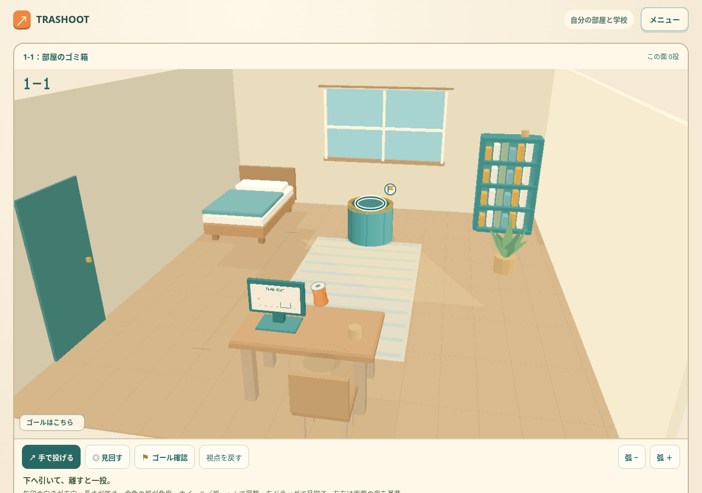
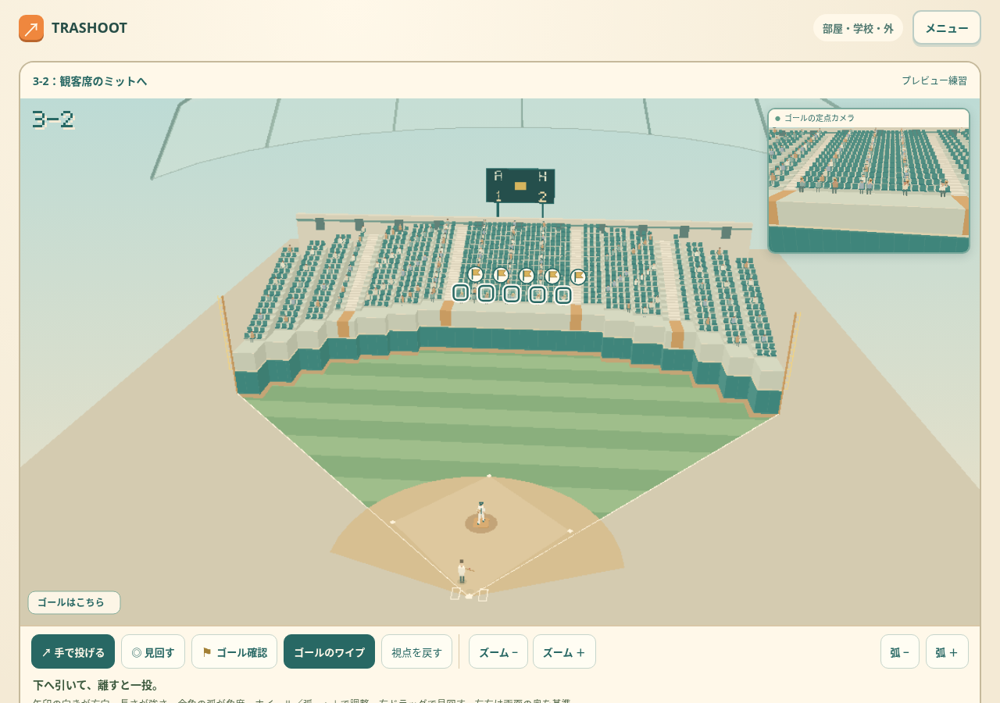
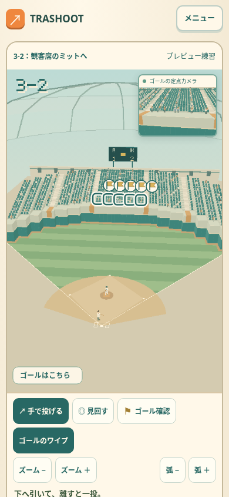

TRASHOOT · ゴールはここ
面に入ると約3秒、ゴールに輪と旗が出ます。下側の「ゴール確認」でいつでも見直せます。引っ張り始めると印は消えます。画面外やワイプの下に隠れる目標は方向矢印で示します。
第1・2章で遊ぶ · 3-2で確認 · 第4・5章

箱の口をハイライト。
複数の通常ゴールもそれぞれ表示。3-2の別解は、バックスクリーンの得点板にある光る場所です。
タッチでも同じボタンで確認。画像は凍結版ゲームの原スクリーンショットです。